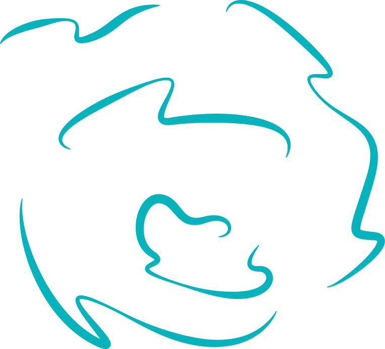
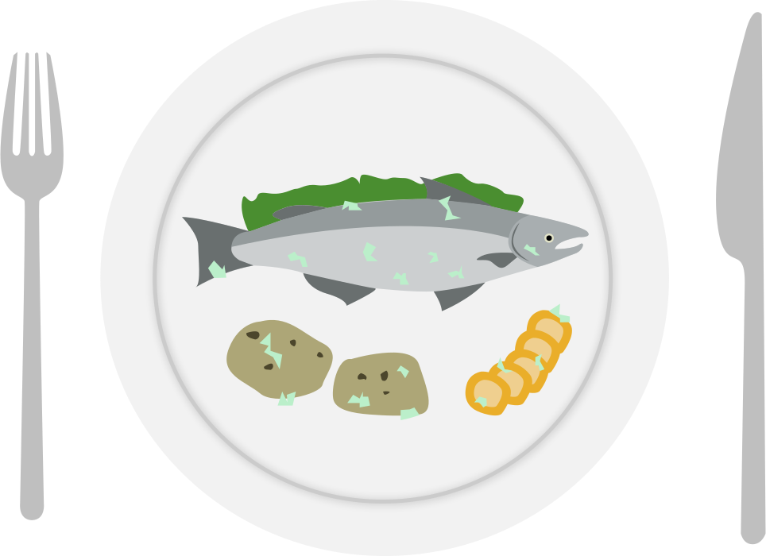

Plastforsøpling påvirker ikke bare sjøliv, det drar med seg giftige forurensinger inn i næringskjeden - ei kjede som inkluderer oss mennesker.
Plasten driver inn i store havstrømmer også kalt gyre. Når plasten er fanget inne i en gyre vil den sakte bryte ned til mikroplast.
Mikroplasten vil bli en del av maten sjølivet spiser. Plasten blir værende i dem og gjør skade. Deretter ender det opp på våres middagstallerken.
an average person could be ingesting approximately 5 grams of plastic every week
The Ocean Cleanup er en ideel organisasjon som designer og utvikler rensesystemer. Rensesystemene blir brukt til å rense havene våre og stoppe plastikk på vei inn i havet fra elver. Boyan Slat (CEO av The Ocean Cleanup) startet The Ocean Cleanup som 18 åring. Han er den yngste som noen gang har mottatt UN sin høyeste miljø pris; Champion of the earth i 2015. Han mottok også prisen for Ungt Entreprenørskap av Hans Majestet Kong Harald 2015.